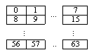
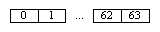
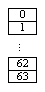

D3DCOPYRECTROPSTATE
Describes the ROP state used in IDirect3DDevice8::CopyRects.
typedef struct _D3DCOPYRECTROPSTATE // Xbox extension
{
DWORD Rop;
DWORD Shape;
DWORD PatternSelect;
DWORD MonoColor0;
DWORD MonoColor1;
DWORD MonoPattern0;
DWORD MonoPattern1;
CONST DWORD *ColorPattern;
} D3DCOPYRECTROPSTATE;
Members
- Rop
- The ternary raster operation (ROP) to be performed. For a listing of all 256 possible ROP codes, consult a Windows Programming Reference under BitBlt.
- Shape
- Shape of the pattern to be BitBlt. Shape must be 0, 1, or 2. If Shape is 0, the pattern is 8x8 pixels. If Shape is 1, the pattern is a horizontal strip of 64 pixels. If Shape is 2, the pattern is a vertical strip of 64 pixels.
| Value |
Description |
| 0 |
 |
| 1 |
 |
| 2 |
 |
- PatternSelect
- Sets whether the pattern is monochrome or color. PatternSelect must be 0 or 1. If PatternSelect is 0, the pattern will be monochrome. If PatternSelect is 1, the pattern will be color.
- MonoColor0
- Specifies the color to use when the bit in MonoPattern0 or MonoPattern1 is 0. This value is only used when PatternSelect is 0.
- MonoColor1
- Specifies the color to use when the bit in MonoPattern0 or MonoPattern1 is 1. This value is only used when PatternSelect is 0.
- MonoPattern0
- Specifies bits 31:0 of the pattern selected in Shape. This value is only used when PatternSelect is 0.
- MonoPattern1
- Specifies bits 63:32 of the pattern selected in Shape. This value is only used when PatternSelect is 0.
- ColorPattern
- Pointer to an array of DWORDs that give the colors of the pattern. If the source and destination surfaces are 16-bit, this will be an array of 32 DWORDs. If the source and destination surfaces are 32-bit, this will be an array of 64 DWORDs. ColorPattern may be NULL if PatternSelect is 0.
Requirements
Header: Declared in D3d8types.h.
See Also
IDirect3DDevice8::CopyRects, IDirect3DDevice8::GetCopyRectsState, IDirect3DDevice8::SetCopyRectsState